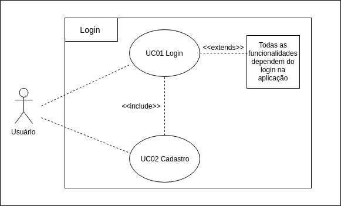

Caso de Uso - Efetuar Login

Especificações
UC01 - Efetuar Login
| Descrição | Autenticar o acesso do usuário a rede social, tendo acesso a todo conteúdo relacionado a suas especificações e interações. |
| Ator(es) | Usuário |
| Pré-Condições | * Possuir cadastro/conta no Twitter * Acesso a Internet * Aplicativo mobile ou desktop |
| Pós-Condições | Acesso a homepage e funcionalidades existentes no sistema |
| Fluxo Princtipal | [FP01] Este fluxo é necessário para o usuário utilizar/acessar o sistema 1. O ator abre o aplicativo do twitter 2. O sistema fornece a página de login 3. O ator fornece os campos de username e senha 4. O ator clica em "Entrar" 5. O sistema autentica o usuário e seus dados |
| Fluxo(s) Alternativos | [FA01] Este fluxo relata o primeiro contato do usuário com a plataforma 1. O ator abre o aplicativo do twitter 2. O sistema fornece a página de login e sing up 3. O sistema fornece parte de cadastro(sing up) 4. O ator cadastra seus dados 5. O sistema busca identificar e confirmar a identidade do futuro usuário 6. O sistema autentica o usuário e seus dados |
| Fluxo(s) de exceção | [FE01-A] O fluxo a seguir exprime uma adversidade do usuário no sistema 1. O ator abre o aplicativo do twitter 2. O sistema fornece a página de login 3. O ator não se recorda de suas credenciais de acesso 4. O sistema oferece suporte de recuperação de credenciais 5. O sistema fornece refatoração dos daos 6. O sistema autentica o usuário e seus dados [FE01-B] O usuário não possui acesso a Internet |
| Autores: Bruno, Eugênio | |
| Versão: 0.1 | |
| *** |
Versionamento de edições desta página
| Data | Autor | Descrição | Versão |
|---|---|---|---|
| 27/09/2019 | Bruno Henrique | Adição descrição e atores | 0.1 |
| 27/09/2019 | Eugênio Sales | Adição de fluxos alternativos e excessão | 0.2 |
| 27/09/2019 | Erick Giffoni | Melhorias na edição da página | 0.2.1 |
| 30/09/2019 | Bruno | Refatorando a página | 0.2.2 |